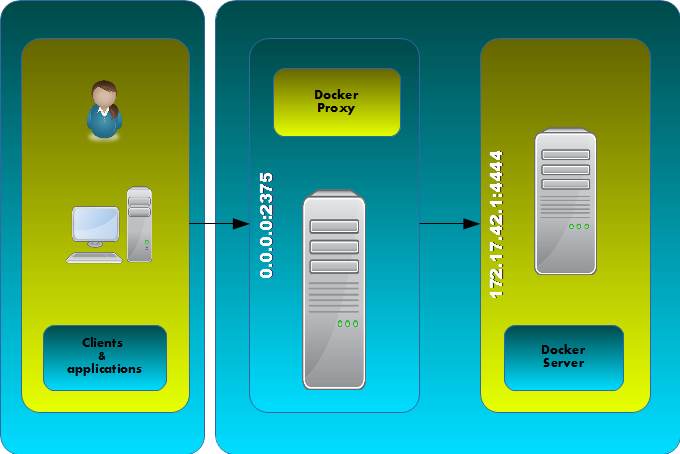

Nginx Proxy for Docker Rest API
Https secure proxy and auth for Docker daemon (Rest API)
Tested with Docker 1.3.1 on Ubuntu 14.04
- http://srault95.github.io/docker-proxy-api
- https://registry.hub.docker.com/u/srault95/docker-proxy-api/
Features
- Basic auth http
- Secure http by SSL certificate
Schema

Quick Start
- Transparent installation. No port mapping
- Replace DOCKER_USER and DOCKER_PASSWORD by your values
$ docker pull srault95/docker-proxy-api
$ docker run --restart always -d --name docker-proxy -e DOCKER_USER=myuser -e DOCKER_PASSWORD=password srault95/docker-proxy-api
$ DOCKER_PROXY=$(docker inspect -f '{{.NetworkSettings.IPAddress}}' docker-proxy)
$ curl -k https://${DOCKER_PROXY}:2375/_ping
$ curl -k -u myuser:password https://${DOCKER_PROXY}:2375/info
Pull image from registry
$ docker pull srault95/docker-proxy-api
Build
Image from Dockerfile
$ git clone https://github.com/srault95/docker-proxy-api.git
$ cd docker-proxy-api
$ docker build -t docker-proxy-api .
Configure docker daemon
172.17.42.1 is default ip address for docker0 interface in ubuntu trusty
$ vi /etc/default/docker
DOCKER_OPTS="-H tcp://172.17.42.1:4444 -H unix:///var/run/docker.sock"
$ service docker reload
Run for testing
``` {.sourceCode .bash} $ docker run -it --rm -p 2375:2375 srault95/docker-proxy-api
Run for production
------------------
``` {.sourceCode .bash}
$ docker run -d --name docker-proxy -p 2375:2375 srault95/docker-proxy-api
Test Rest request with curl
Use curl -k or --insecure for curl with auto-certificate
# without authentication (only for _ping)
$ curl -k https://127.0.0.1:2375/_ping
OK
# with authentication
$ curl -k -u docker:docker https://127.0.0.1:2375/info
{"Containers":38,"Debug":0,"Driver":"aufs","DriverStatus":[["Root Dir","/home/docker/aufs"],["Dirs","893"]],"ExecutionDriver":"native-0.2","IPv4Forwarding":1,"Images":811,"IndexServerAddress":"https://index.docker.io/v1/","InitPath":"/usr/bin/docker","InitSha1":"","KernelVersion":"3.13.0-39-generic","MemoryLimit":1,"NEventsListener":0,"NFd":16,"NGoroutines":23,"OperatingSystem":"Ubuntu 14.04.1 LTS","SwapLimit":1}
No port mapping
$ docker run -d --name docker-proxy srault95/docker-proxy-api
$ DOCKER_PROXY=$(docker inspect -f '{{.NetworkSettings.IPAddress}}' docker-proxy)
$ curl -k https://${DOCKER_PROXY}:2375/_ping
OK
For remplace SSL certificate and password on start contenair
$ docker run -e FORCE_CONFIG=1 -d --name docker-proxy -p 2375:2375 srault95/docker-proxy-api
For change SSL parameters
# Default values
SSL_COMMON_NAME=localhost
SSL_RSA_BIT=4096
SSL_DAYS=365
$ docker run -d --name docker-proxy -p 2375:2375 \
-e FORCE_CONFIG=1 -e SSL_COMMON_NAME=my_common_name -e SSL_RSA_BIT=2048 -e SSL_DAYS=730 \
srault95/docker-proxy-api
For change login/password
Password max length: 8 characters
# Default values
DOCKER_USER=docker
DOCKER_PASSWORD=docker
$ docker run -d --name docker-proxy -p 2375:2375 \
-e FORCE_CONFIG=1 -e DOCKER_USER=user -e DOCKER_PASSWORD=password \
srault95/docker-proxy-api
$ curl -k -u user:password https://127.0.0.1:2375/info
For use external certificate
Warning: if you use "-e FORCE_CONFIG=1" after creating your certificates, your files will be deleted
-
Generate your certificate with openssl or import your existant certificat:
$ mkdir nginx-certs $ openssl genrsa -out nginx-certs/server.key 1024 $ openssl req -new -newkey rsa:4096 -days 365 -nodes -subj "/C=/ST=/L=/O=/CN=localhost" -keyout nginx-certs/server.key -out nginx-certs/server.csr $ openssl x509 -req -days 365 -in nginx-certs/server.csr -signkey nginx-certs/server.key -out nginx-certs/server.crt -
Use docker volume:
$ docker run -d --name docker-proxy -p 2375:2375 \ -v `pwd`/nginx-certs:/etc/nginx/certs \ srault95/docker-proxy-api
For use external password file
-
Create new password file:
$ printf "user:$(openssl passwd -crypt 12345678)\n" > my_passwd_file -
Run contenair with volume option:
$ docker run -e NO_GEN_PASSWORD=1 -d --name docker-proxy -p 2375:2375 \ -v `pwd`/my_passwd_file:/etc/nginx/.passwd \ srault95/docker-proxy-api -
Test:
$ curl -k -u user:12345678 https://127.0.0.1:2375/info
Change ip:port address of your docker daemon
-
Copy or edit docker-proxy.conf and change value:
proxy_pass http://172.17.42.1:4444; -
Use docker-proxy.conf in volume:
$ docker run -d --name docker-proxy -p 2375:2375 \ -v /docker-proxy.conf:/etc/nginx/docker-proxy.conf \ srault95/docker-proxy-api
Access with python
$ virtualenv docker
$ source docker/bin/activate
$ pip install docker-py
$ python
>>> import docker
>>> tls_config = docker.tls.TLSConfig(verify=False)
>>> c = docker.Client(base_url='https://127.0.0.1:2375', tls=tls_config)
>>> c.auth = ('docker', 'docker')
>>> c.ping()
For disable SSL warnings from urllib3
>>> from requests.packages import urllib3
>>> urllib3.disable_warnings()
Nginx Logs
- Nginx logs redirect to /dev/stdout and /dev/stderr for display in "docker logs CID"
- Accès logs on host with json format
DOCKER_PROXY_ID=$(docker inspect -f '{{.Id}}' docker-proxy)
cat /var/lib/docker/containers/${DOCKER_PROXY_ID}/${DOCKER_PROXY_ID}-json.log
$ echo /var/lib/docker/containers/${DOCKER_PROXY_ID}/${DOCKER_PROXY_ID}-json.log
/var/lib/docker/containers/ddda603702be34d99ab5b0a8bdea06bd821ebe4870ef50414063e4417901c532/ddda603702be34d99ab5b0a8bdea06bd821ebe4870ef50414063e4417901c532-json.log
$ python
>>> import json, pprint
>>> values = open('/var/lib/docker/containers/ddda603702be34d99ab5b0a8bdea06bd821ebe4870ef50414063e4417901c532/ddda603702be34d99ab5b0a8bdea06bd821ebe4870ef50414063e4417901c532-json.log').readlines()
>>> for value in values: pprint.pprint(json.loads(value))
...
{u'log': u'SSL certificate generation...\n',
u'stream': u'stdout',
u'time': u'2014-12-12T09:56:12.912944973Z'}
{u'log': u'Password generation...\n',
u'stream': u'stdout',
u'time': u'2014-12-12T09:56:13.796529889Z'}
>>> for value in values: print json.loads(value)['time']
...
2014-12-12T09:56:12.912944973Z
2014-12-12T09:56:13.796529889Z
Todos / Ideas
- Documentation en Français
- Add schema
- Publish to HUB registry
- Drone test: Drone
- Test with -api-enable-cors
- Optimisations nginx
- Configuration for ip address of docker in proxy_pass
- Add authentication method
- optionnal ssl and password
- Interest of links from this contenair:
$ docker run -it --rm --link docker-proxy:proxy ubuntu env | grep PROXY_PORT PROXY_PORT_2375_TCP=tcp://172.17.0.15:2375 PROXY_PORT_2375_TCP_ADDR=172.17.0.15 PROXY_PORT_2375_TCP_PORT=2375 PROXY_PORT_2375_TCP_PROTO=tcp